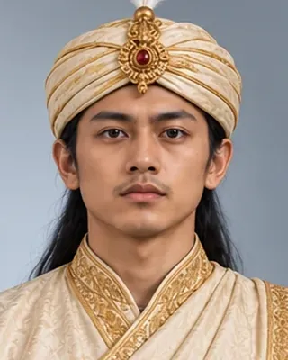

Kamaleswar Singha (Suklingphaa)
কমলেশ্বৰ সিংহ
1795–1811 · Thirty-sixth Ahom king

Placed on the throne as an infant by Purnananda Burhagohain, who held real power; died of smallpox.
- Tai name
- Suklingphaa
- Hindu name
- Kamaleswar Singha
- Also called
- Kinaram (in some accounts)
- Family
- Installed as an infant
- Fate
- Natural death (smallpox)
Record confidence: high.
Sources
Open interactive profile
Related scenes